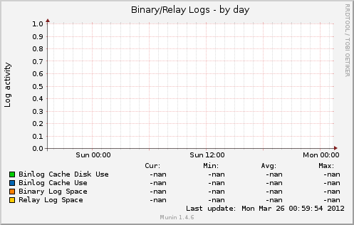
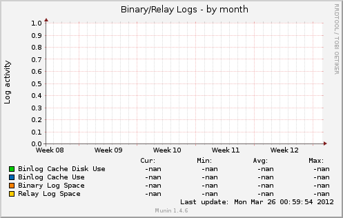
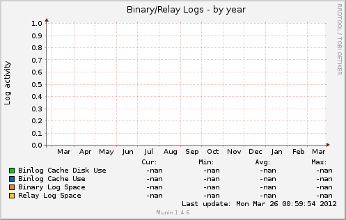

Overview
::
foodclub
::
sakura.foodclub
:: mysql bin relay log



Field
Internal name
Type
Warn
Crit
Info
Binlog Cache Disk Use
Binlog_cache_disk_use
derive
Binlog Cache Use
Binlog_cache_use
derive
Binary Log Space
ma_binlog_size
derive
Relay Log Space
relay_log_space
derive
Overview
::
foodclub
::
sakura.foodclub
:: Mysql2 ::
Graphs in same category
mysql bin relay log
mysql commands
mysql connections
mysql files tables
mysql innodb bpool
mysql innodb bpool act
mysql innodb insert buf
mysql innodb io
mysql innodb io pend
mysql innodb log
mysql innodb rows
mysql innodb semaphores
mysql innodb tnx
mysql myisam indexes
mysql network traffic
mysql qcache
mysql qcache mem
mysql replication
mysql select types
mysql slow
mysql sorts
mysql table locks
mysql tmp tables
This page was generated by
Munin
version 1.4.6 at 2012-03-26 01:15:14+0400 (MSK)